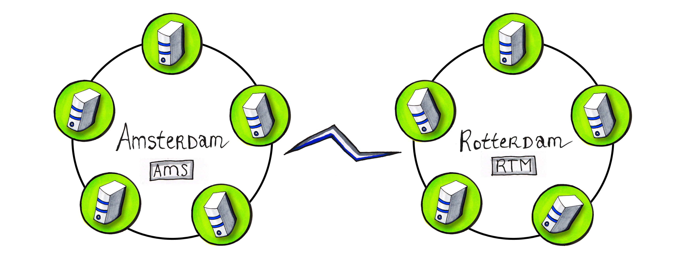

C* Primer
Part 01: Cassandra and Modeling Basics
ING Netherlands (@ingnl)
a little bit about us
Gary Stewart
Christopher Reedijk
- Dev Engineer
- Love/hate relationship with C*
- 14 years of experience in IT
- @ING since: 01-01-2012
- Dev Engineer
- Back-end guy
- 10 years of experience in IT
- @ING since: 01-01-2011


3 Challenges
challenge 1 Improve availability
without trading consistency
availability & consistency
Consequences of not being available


source: nu.nl
availability & consistency
Consequences of not being consistent

challenge 2
Aim to be easier scalable
Changes are happening at an increasing pace
easier scalable
Stop focusing on the
expected load
yesterday
source: bradfrostweb.com
easier scalable
Start focusing on the
unexpected load
today tomorrow source: bradfrostweb.com

challenge 3
Adopt new ways of thinking
Become the top engineering company
new way of thinking
ING's culture is changing fast.
Waterfall to Scrum to DevOps in less than 2 years
new way of thinking
Aim to approach problems as green field
"Un-learn" principles that don't scale
Use cache correctly!
Reduce locking (transaction)
Cassandra Internals
DataStax and Cassandra
Founded in 2010 by Jonathan Ellis and Matt Pfeil
80% Apache Cassandra code contribution
Offer commercial support for DataStax Enterprise version of Cassandra
DataStax Enterprise integrates Search and Analytics
Head Quarter in San Francisco Bay area
EMEA office opened in March 2013


Native Protocol / DataStax Drivers
CQL3 Only
Fully asynchronous protocol, using Netty
Server notifications
Java, C#, Python, node.js and Ruby, ...
Many policies, including:
TokenAwarePolicy, DowngradeConsistencyRetryPolicy, etc...
Metrics (codahale) included
Apache Cassandra
Created by Avinash Lakshman and Prashant Malik at Facebook
Cassandra is
Cassandra is not
- A distributed database
- Highly scalable
- Fault tolerant
- Consistency is tunable
- High throughput
- Network topology aware
- Multi-DC Active-Active
- Written in Java
- A column family
- CQL3
- ACID compliant database
- A relational database
- ANSI SQL compliant
- A document database
Tuneable Consistency
Configureable Consistency Level (CL)
per read and write action
Writes
- Any
- One
- Two
- Three
- Local_Quorum
- Quorum
- Each_Quorum
- All
Reads
- One
- Two
- Three
- Local_Quorum
- Quorum
- Each_Quorum
- All
Logical Grouping
Keyspace: group of tables
Table: group of data
Replication Factor:
Number of copies of data
Cassandra Replication Strategy
Token Range 0 -> 2127-1 in Ring Formation
Consistent Hashing Algorithm
Replica nodes in clockwise
Gossip protocol between nodes
Replication Factor (RF) = 3
Network Topology Awareness

Strong Consistency

CAP – Consistency, Availability, Partition Tolerance
Consistency is achieved with W + R > RF
Quorum = (Integer) RF / 2 + 1
Write Path

Read Path

CQL3
Why CQL3?
Excellent language for modeling data structures
Usability
Readability
Familiarity
Programming language agnostic
Apache Thrift, Hector, Astyanax days
Column col =
new Column(ByteBuffer.wrap("product".getBytes())));
col.setValue(ByteBuffer.wrap("phone".getBytes());
col.setTimestamp(System.currentTimeMillis());
ColumnOrSuperColumn c = new ColumnOrSuperColumn();
c.setColumn(col);
Mutation m = new Mutation();
m.setColumn_or_supercolumn(c);
List
|
CQL3
INSERT INTO products (product_id, product)
VALUES (“id12321”, “phone”);
Data Modelling
Primary Key
The Primary Key
- The key that uniquely identifies a row
- A primary key consists of:
- A (composite) partition key
- One or more clustering columns
e.g. PRIMARY KEY (partition key, cluster columns, ...) - The partition key determines on which node the partition resides
- Data is ordered in cluster column order within the partition
Creating a table
|
We can visualize it this way: 
In this example: |
Composite partition key
|

Each city gets it own partition! |
Clustering columns
|

|
Simple Select
SELECT *
FROM sporty_league;

|
|
"Table scan" - slow! (Limited to 10,000 rows by default)
Use LIMIT keyword to choose fewer or more rows
Simple Select on Partition Key and Cluster Columns
SELECT *
FROM sporty_league
WHERE team_name = 'Mighty Mutts';
SELECT *
FROM sporty_league
WHERE team_name = 'Mighty Mutts'
AND player_name = 'Lucky';
Insert/Update
INSERT INTO sporty_league (team_name, player_name, jersey)
VALUES ('Mighty Mutts','Felix',90);
UPDATE sporty_league
SET jersey = 100
WHERE team_name = 'Mighty Mutts'
AND player_name = 'Felix';
Counters
CREATE TABLE sporty_league (
team_name varchar,
player_name varchar,
jersey int,
scores counter,
PRIMARY KEY (team_name, player_name, jersey)
);
UPDATE sporty_league
SET scores = scores + 1
WHERE team_name = 'Mighty Mutts'
AND player_name = 'Buddy'
AND jersey = '32';
Data Types

Collections
CQL supports having columns that contain collections of data
The collection types include: Set, List and Map (64K max limitation) |
|
These data types are intended to support the type of 1-to-many relationships that can be modeled in a relational DB e.g. a user has many email addresses
Some performance considerations around collections
- Often more efficient to denormalise further rather than use collections if intending to store lots of data.
- Favour sets over list – lists not very performant
Performance
considerations
The best queries are in a single partition.
i.e. WHERE partition key =Queries that span multiple partitions are s-l-o-w
i.e. WHERE partition key IN (Queries that span multiple cluster columns are fast
i.e. WHERE partition key =(Clustering) Order By
|
Partition keys are not ordered! You can only order by a clustering column Data will ordered ASCending by default You can also use the ORDER BY keyword, but only on the clustering column(s), which don't have CLUSTERING ORDER BY defined! |
De-normalize
| Don't do this | Do this instead |
|---|---|
|
|
Time to Live (TTL)
INSERT INTO users (id, first, last)
VALUES ('abc123', 'abe', 'lincoln')
USING TTL 3600; // Expires data in one hour
Time Series
|
|
|
|
|
|
Lightweight Transactions
Introduced in Cassandra 2.0
Example:
INSERT INTO customer_account (customerID, customer_email)
VALUES ('LauraS', 'lauras@gmail.com')
IF NOT EXISTS;
UPDATE customer_account
SET customer_email='laurass@gmail.com'
IF customer_email='lauras@gmail.com';
Great for 1% of your application – but not recommended to be used too much!
Tracing
You can turn on tracing on or off for queries with the TRACING ON | OFF command
This can help you understand what Cassandra is doing and identify any performance problems
Improve availability
Aim to be scalable
Adopt new ways of thinking
3 Facts
fact 1
Availability is easier
Masterless architecture
No outages in contrast to master-slave architecture
This does make C* chatty
Replication of data
Replication factor is configurable per keyspace
Increasing nodes does not mean higher availability
Increasing the replication factor does
fact 2
Performance is easier
Solve your reads with your writes
De-normalization is acceptable for solving reads
Know your partitions
Large partitions will hurt!

Linear scalable
Adding nodes will increase your throughput through sharding

source: Datastax
fact 3
Consistency is harder
Application developer has much more responsibility
Focus on the data model and the flow of data is key
noSQL versus SQL
CAP theorem
Consistency (all nodes see the same data at the same time)
Availability (a guarantee that every request receives a response about whether it was successful or failed)
Partition tolerance (the system continues to operate despite arbitrary message loss or failure of part of the system)
Transactions and queuing are anti-patterns
C* v2.0 reduces the complexity by using lightweight transactions (paxos)
Availability is easier | challenge 1: availability & consistency
Performance is easier | challenge 2 easier scalable
Consistency is harder | challenge * availability & consistency, easier scalable, new way of thinking
all challenges covered...
C*@ING
| project |
use case |
status |
|---|---|---|
| Betelgeuze | Cache of Customer Data (KRO) | September 2014 in PRD |
| OI: Financial Fit | SOR for soft data | September 2014 in PRD |
| RTPE | New payments engine for on-us payments | February 2015 in PRD |
| Faster Than Light | Cache of Customer Data (MDM) | PoC |
| Ideal, Sales Support, NGINX, ... |
Session Management | In DEV |
| Ideal | Order Management | Product Backlog |
| Credit Cards | Cache external data | Awaiting budget |
| Availability Dashboard | Time series | In DEV |
| Realtime Account Forecasting | Cache of SAM data | PoC |
3 Questions - Bonus
question 1
What risks do we have with
2 DC's and using Write/Read CL of LOCAL_QUORUM?

Split-brain

Who wins? Neither side knows the other side!
CAP theorem - choose wisely
Use QUORUM but risk availability
when there are issues with the WAN link
Arrange a third DC... €€€
Applications apply DC stickiness
whilst processing data which increases complexity
question 2
Does QUORUM read and QUORUM write guarantee consistency?
No - it gives strong consistency
NTP must be set-up correctly
Know your flow of data
Model as idem-potent-ly as possible

question 3
Will C* solve all your IT issues?
No - but it will help solve a lot of your problems
Performance and availability are tuneable based on needs and costs
Consistency is solved by design and knowing the flow of data
Going from SQL to noSQL is a paradigm shift
Skills are not readily available
Some issues are better solved by relational databases
Thank you
...graceful bowContact
christopher.reedijk@ing.nl
gary.stewart@ing.nl